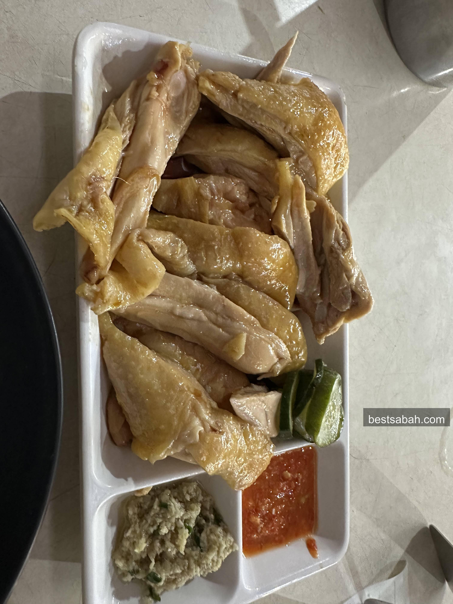
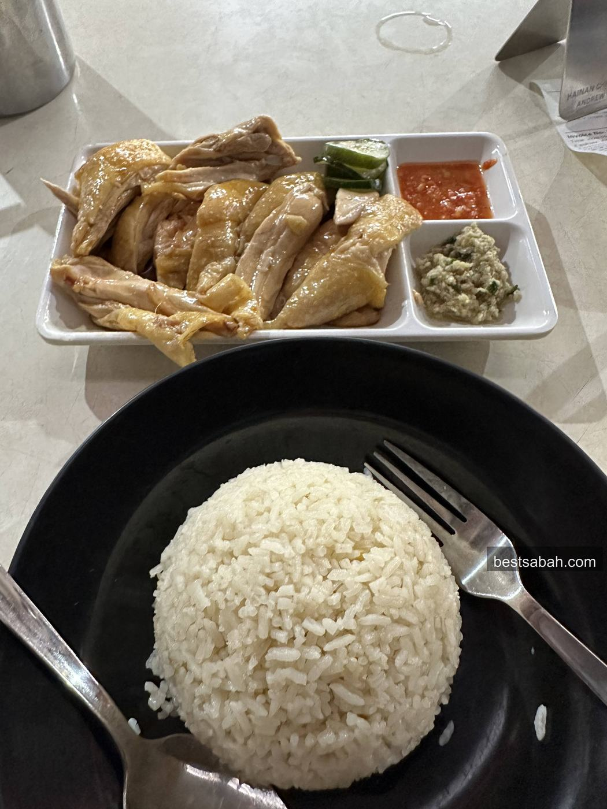
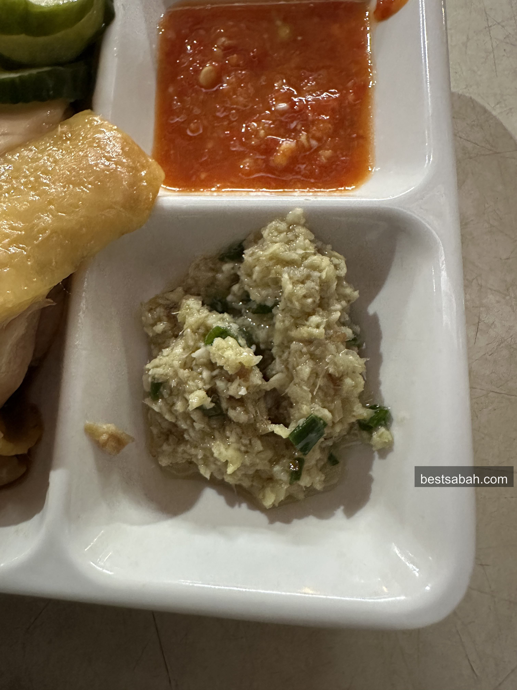
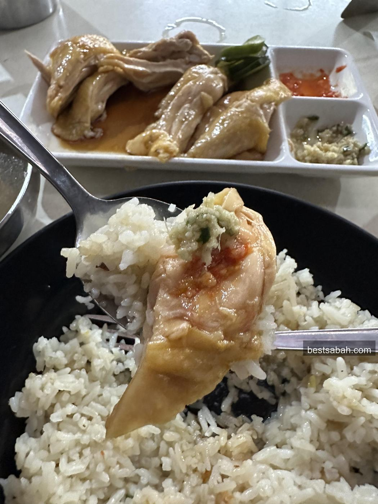
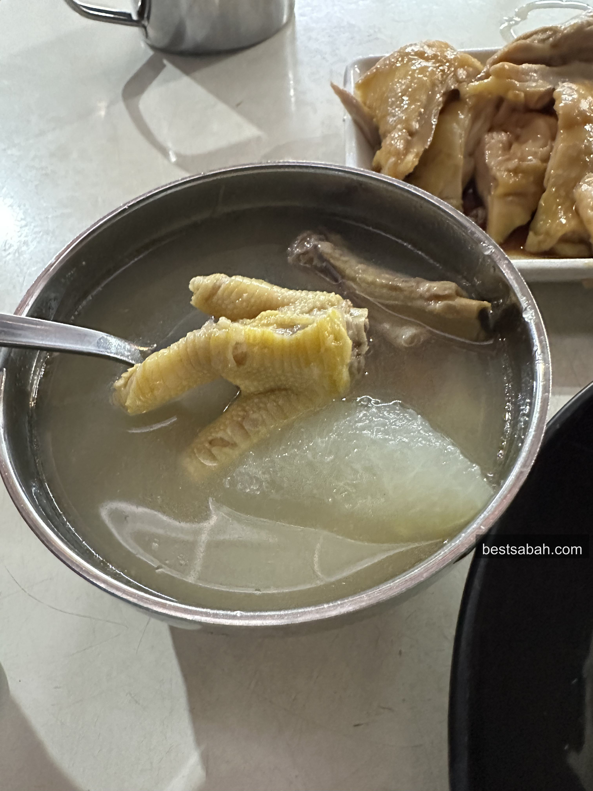
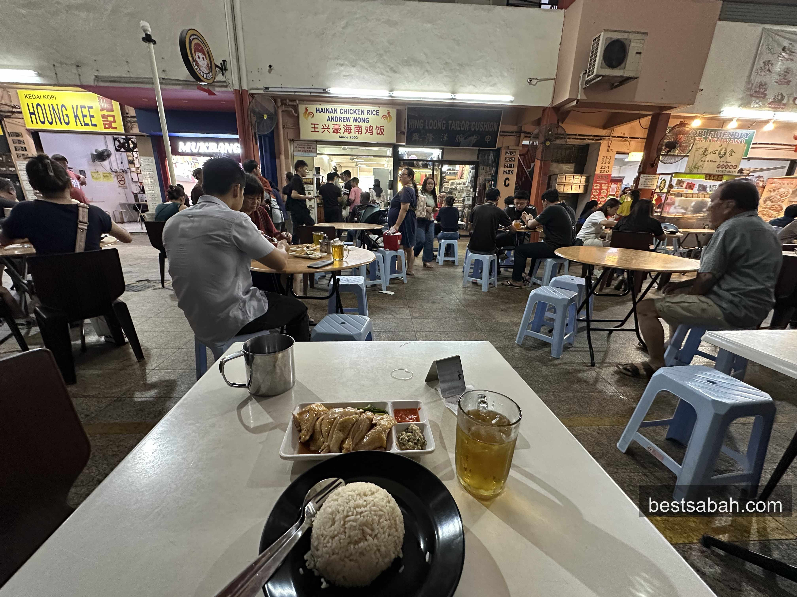
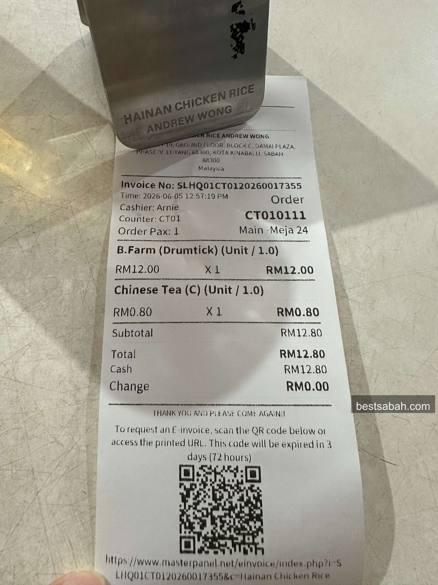
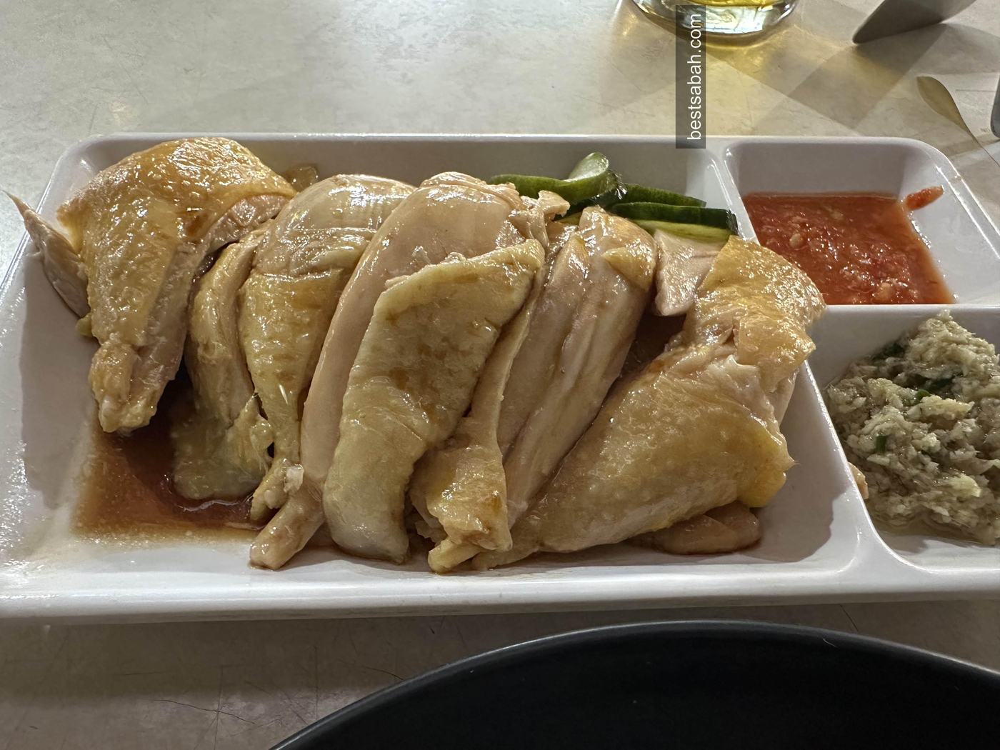

June 2026
Best Chicken Rice in Kota Kinabalu -- Andrew Wong Hainanese Chicken Rice
Hidden in Damai Plaza, not touristy at all. Massive portions, juicy chicken, and a ginger sauce that'll have you asking for extra before you finish your first plate.

Andrew Wong in Damai Plaza. You'd only know about this place if someone told you.
There are a lot of chicken rice shops in KK. Everyone has their favourite. But I'm willing to bet most people just haven't tried Andrew Wong yet.
This place is hidden in Damai Plaza. Not touristy at all. You'd only know about it if someone told you, or if you stumbled upon this post.
The Chicken

Look at that drumstick portion. Most places give you a sad little slice.
Look at that drumstick portion. It's massive. Most chicken rice shops give you a sad little slice and call it a day. Not here. The chicken is juicy, bouncy, tender and fragrant. Exactly what good Hainanese chicken rice should be.
I actually wanted the breast portion to hit my protein goals but they ran out by 1pm. Queue was already forming by then. Come early.

The Sauces
The chilli sauce is great. But the real reason to come here is the ginger sauce. I genuinely don't know how to describe it. Just try it. You'll be asking for extra before you finish your first plate. It's that good.

The chilli is solid. The ginger sauce is the one.
Perfect bite: chicken, a bit of chilli, a bit of ginger sauce. That's it.

Soup Kosong
For the non-Sabahans reading this, soup kosong means clear broth soup. Sabahans cannot live without it. Andrew Wong's version has chicken feet and winter melon. Generous portion, clean and delicious.

Chicken feet, winter melon, clear broth. Don't skip it.
The Crowd

Shop is always bustling. Queue forming. That says everything.
Shop is always bustling. A queue was forming when we visited. That alone tells you everything.
Price

Very reasonable. Grab a teh ping on the side and you're set.
Very reasonable. Grab a teh ping on the side and you're set.
The Sliced Version

Juicy, tender, fragrant. This is what good Hainanese chicken looks like.
Chicken rice is chicken rice right? How good can it be. At Andrew Wong, the answer is very good. Juicy chicken, heavenly ginger sauce, generous soup, great chilli. Best chicken rice in KK right now.
They're not in the tourist belt so if you make the trip to Damai, you won't regret it.
Quick Info
Name: Hainan Chicken Rice Andrew Wong
Address: Lot 18, Damai Plaza Phase 4, Lorong Pokok Kayu Manis 2, Damai, Kota Kinabalu
Hours: 10:30am to 2pm daily (closed Friday)
Price: RM1 to RM20
Google Maps: Get directions
And if you're after more solid KK food spots, Yu Kee Bak Kut Teh on Jalan Gaya is another one worth making a trip for.